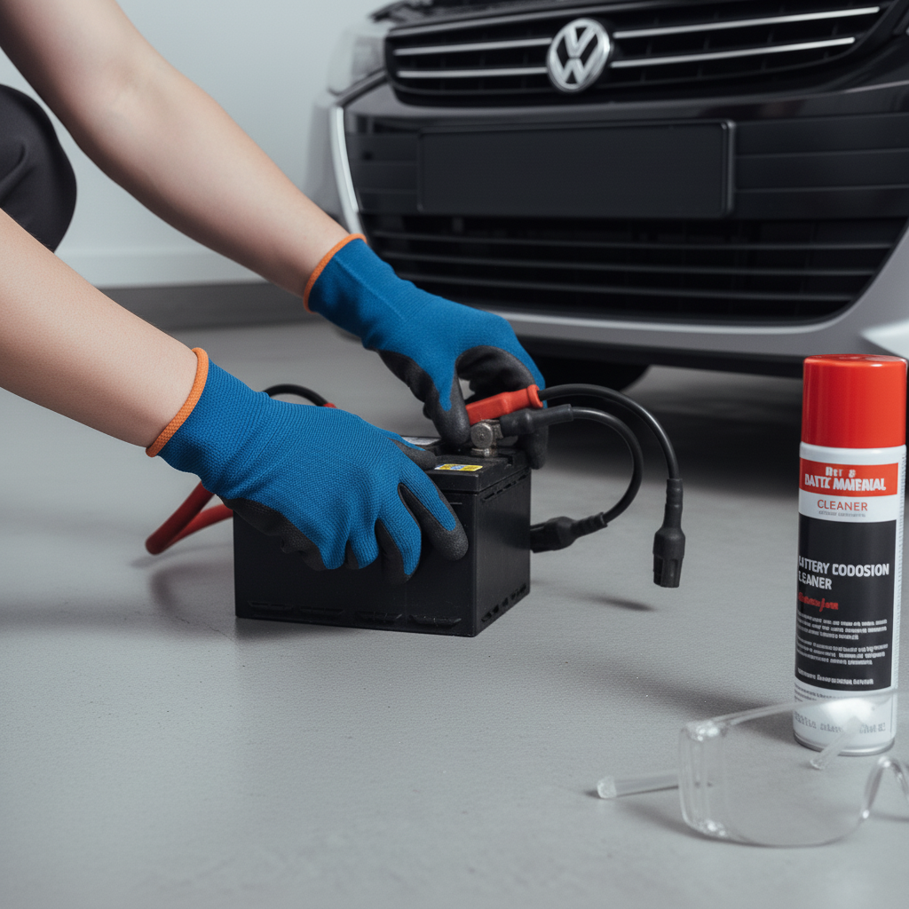
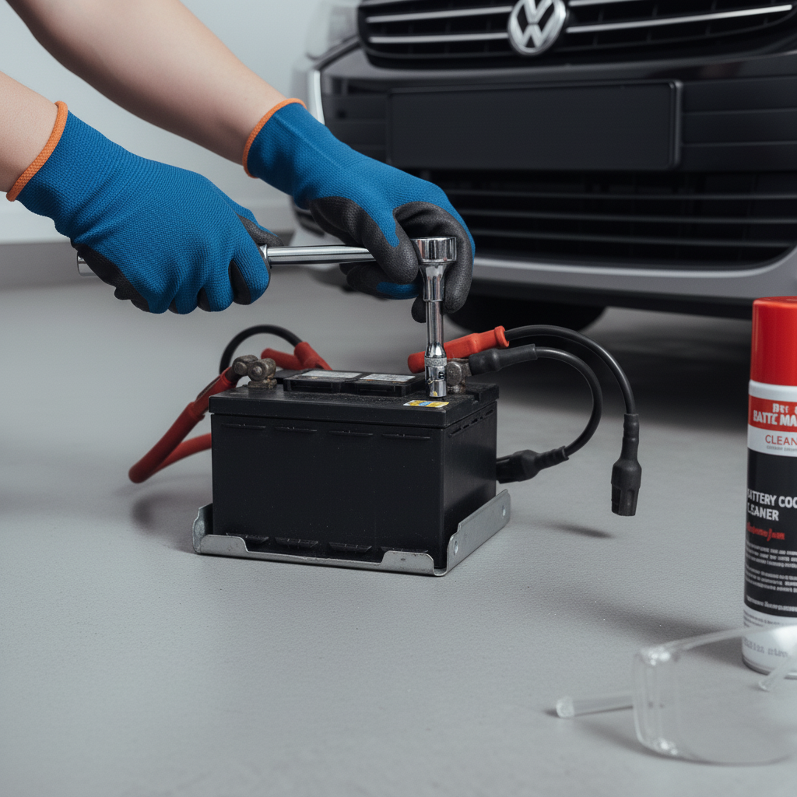
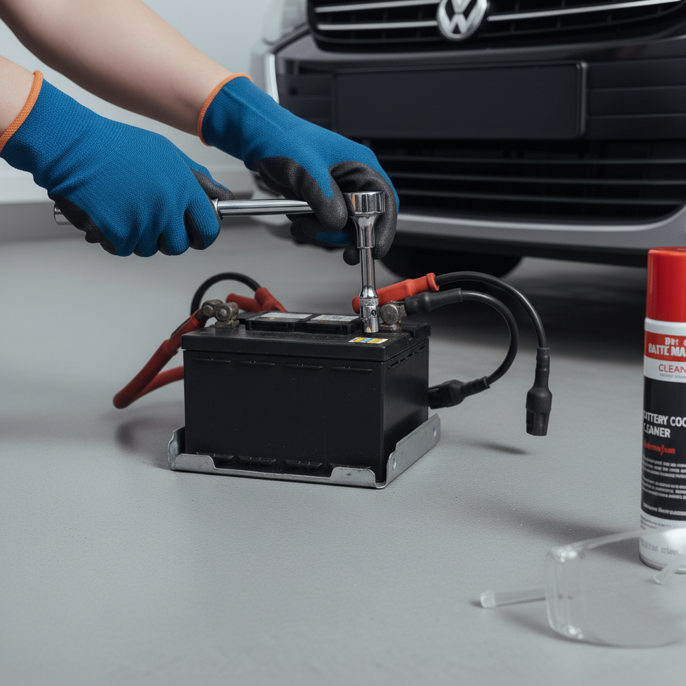
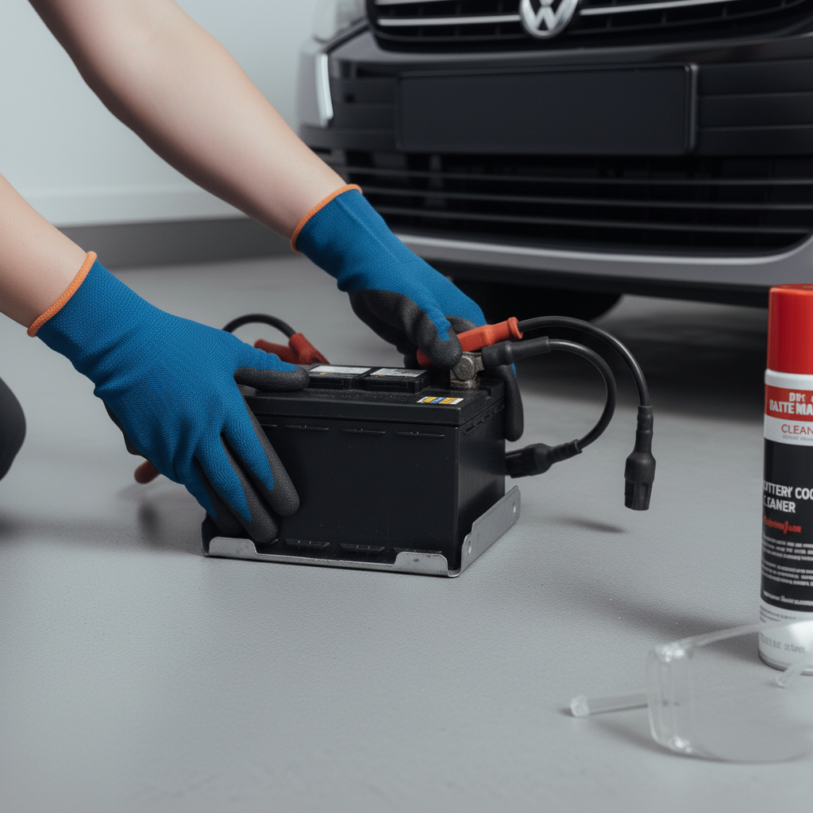
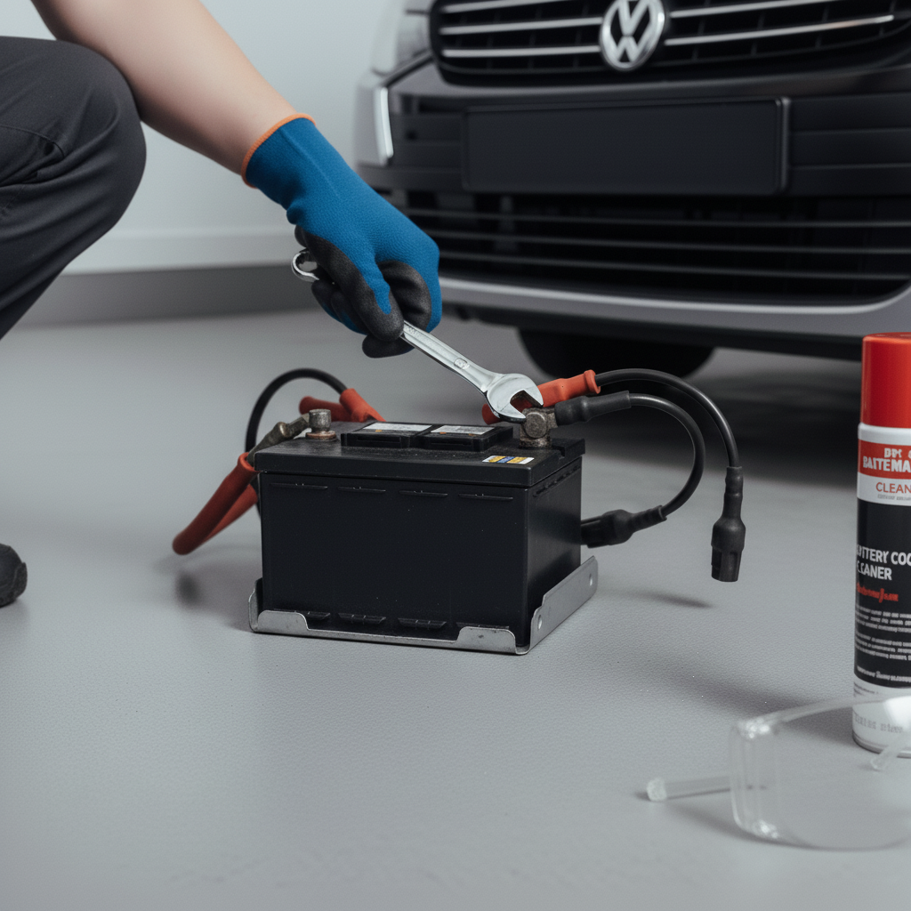
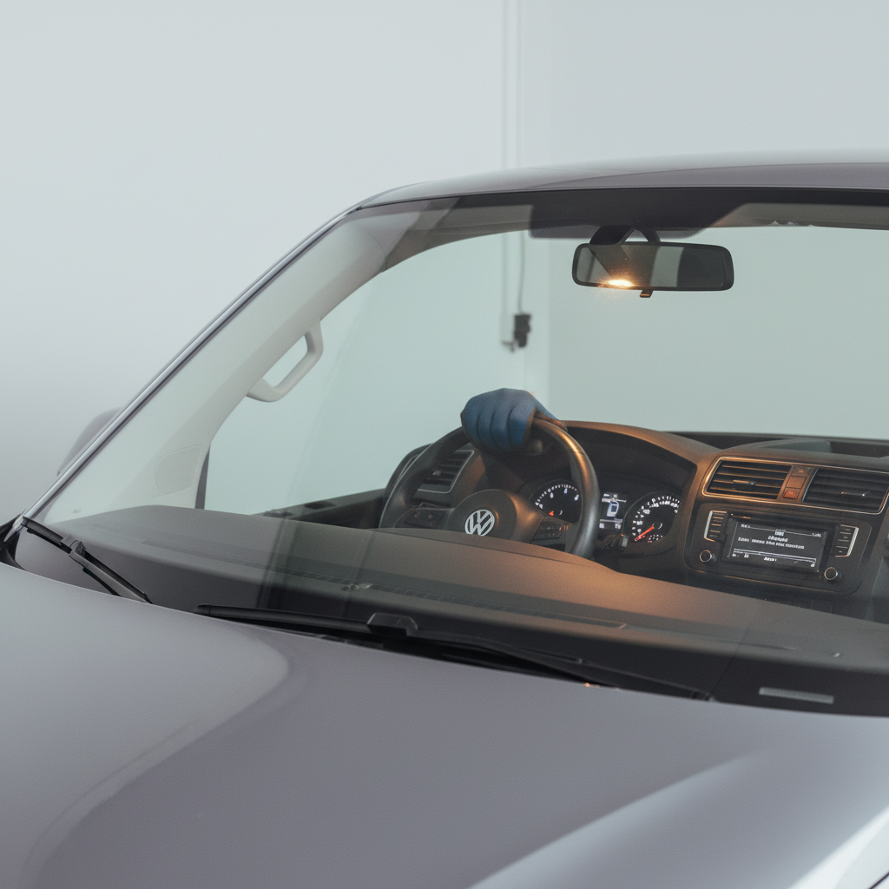

Learn the essential steps to safely and correctly replace your car's battery, a common maintenance task that can save you time and money and prevent you from being stranded.
⏱️ Estimated time: 5 minutes
Park your car on a flat, level surface, away from any open flames or sparks. Turn off the engine, engage the parking brake, and remove the key from the ignition. Open the hood and secure it with the prop rod. Before touching anything, put on your safety glasses and insulated gloves.
⏱️ Estimated time: 5 minutes
Locate the battery in the engine bay. Identify the negative (-) terminal, which is typically marked with a minus sign and has a black cable. Using the correct size wrench (usually 10mm), loosen the nut on the negative terminal clamp. You only need to loosen it enough to wiggle the cable off. Once loose, pull the cable clamp up and away from the battery post and tuck it to the side where it cannot accidentally touch the terminal again.
⏱️ Estimated time: 3 minutes
Now, locate the positive (+) terminal, usually marked with a plus sign and a red cable, and often covered by a red plastic cap. Flip the cap open. Use your wrench to loosen the nut on the positive terminal clamp. Once loose, lift the cable clamp off the post and move it aside.
⏱️ Estimated time: 5 minutes
Locate the bracket or clamp that secures the battery in its tray. This is often a small metal bar at the base of the battery held by one or two long bolts. Use a socket wrench with an extension to reach and remove the bolts. Set the bracket and bolts aside in a safe place.
⏱️ Estimated time: 5 minutes
With all connections and brackets removed, firmly grip the battery (many have a handle) and lift it straight up and out of the engine bay. Place it on the ground away from your work area. Inspect the battery tray and cable clamps for corrosion (a white or greenish powder). Use a battery terminal brush to scrub the clamps clean. You can neutralize any acid spills in the tray with a paste of baking soda and water, then wipe it clean and dry with a rag.
⏱️ Estimated time: 5 minutes
Carefully lower the new battery into the tray, ensuring the positive and negative terminals are oriented in the same position as the old one. Once the battery is seated flat, re-install the hold-down bracket. Tighten the bolts until the battery is snug and does not move when you push on it. Do not over-tighten, as this can crack the battery case.
⏱️ Estimated time: 5 minutes
Now, reconnect the cables in the reverse order of removal. First, place the positive (+) cable clamp onto the positive terminal and tighten the nut with your wrench until it's snug. Close the red plastic cover. Next, connect the negative (-) cable clamp to the negative terminal and tighten it securely. To prevent future corrosion, spray a thin layer of anti-corrosion spray on both terminals.
⏱️ Estimated time: 2 minutes
Give both battery cables a final gentle tug to ensure they are secure. Remove all of your tools and the rag from the engine bay. Close the hood securely. Get in the car and start the engine. It should start up normally. You may need to reset your car's clock and radio presets.
